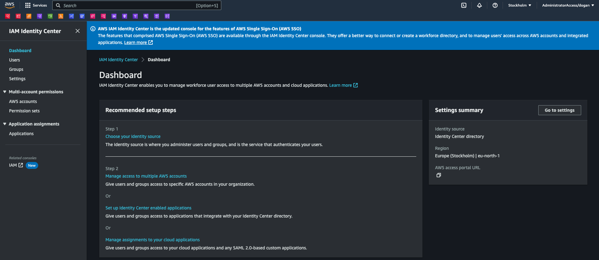
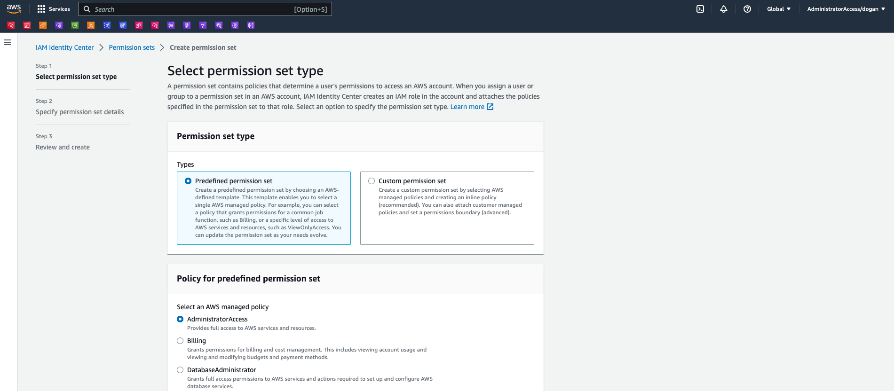
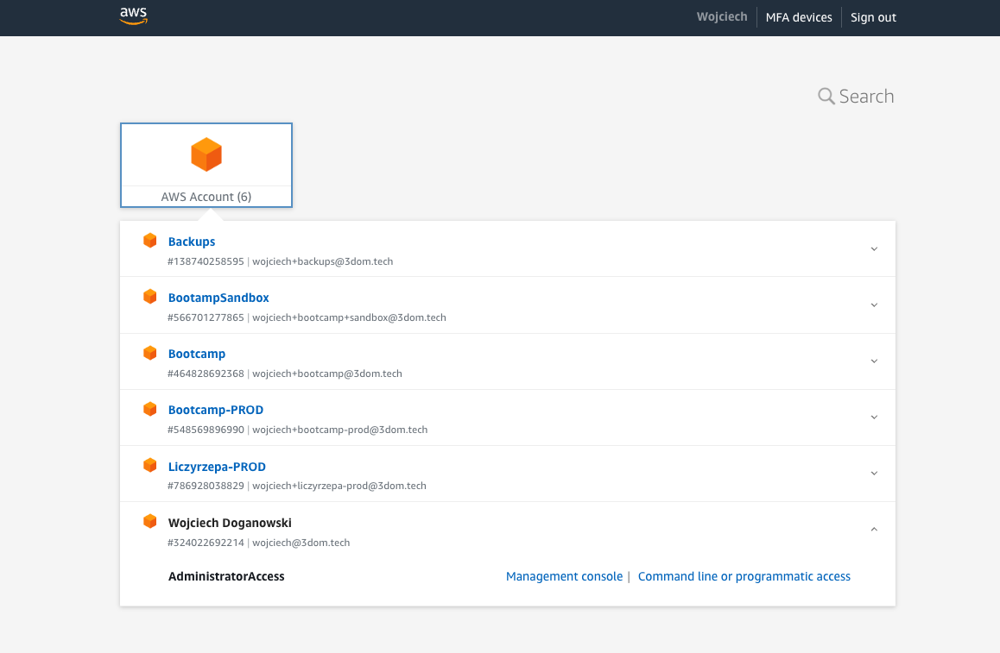

In this article, I will walk you through setting up the IAM Identity Center, which helps a lot, when you have multiple accounts in your AWS Organisation or you want to be able to log in to AWS using your existing credentials.
IAM Identity Center is a central location where an organization manages its digital identities and access control policies. It provides a single point of control for identity and access management across different systems and applications. AWS Identity and Access Management (IAM) is a web service that provides secure access to AWS services and resources for your users.
SSO (Single Sign-On) is a user authentication service that allows users to use one set of login credentials (username and password) to access multiple applications.
By using IAM Identity Center as an SSO, you can simplify user management and increase security. IAM Identity Center allows you to control access to AWS resources, such as Amazon S3 and Amazon EC2 instances, and third-party applications, such as Salesforce and Slack.
In this article, I will focus on setting up the IAM Identity Center without using any external identity provider. This is useful in case you want to access multiple accounts using single login but you do not manage the AWS access through your external SSO. In case you want to set up the IAM Identity Center to use your corporate SSO as an identity provider, please follow those AWS instructions: https://docs.aws.amazon.com/singlesignon/latest/userguide/getting-started.html.
If you have not done it yet, you need to enable the IAM Identity Center. To perform those steps please ensure you are logged in to the AWS Management Console using the root user.
In AWS, the root user is the initial user account created when an AWS account is set up. This account has full access to all AWS services and resources in the account, and it has complete control over all the users and resources in the account.
Upon setting up AWS Organizations, email verification is automatically sent to the email address associated with the management account. It's important to note that there may be a delay in receiving the verification email. It is recommended to verify the email address within 24 hours of receiving the email.

AWS Organizations is a service provided by Amazon Web Services (AWS) that enables centralized management of multiple AWS accounts. It allows an organization to consolidate billing and manage access control policies across multiple AWS accounts.
With AWS Organizations, an administrator can create and manage groups of AWS accounts, known as organizational units (OUs). Each OU can have its own policies and service control policies (SCPs), which are used to restrict access to AWS services and APIs.
AWS Organizations simplifies billing by allowing an organization to consolidate all the AWS accounts under a single payment method. This means that all AWS charges for an organization's accounts are billed to a single account, rather than multiple accounts.
AWS Organizations also make it easier to manage access control and compliance by enabling administrators to apply policies across multiple AWS accounts. Administrators can apply policies at the OU level to restrict access to specific services or APIs, or to enforce compliance requirements.
In the next step, you should choose the identity provider (IdP) for your organization. Upon enabling IAM Identity Center for the first time, it automatically sets up an Identity Center directory as the default identity source. This directory is where users and groups are created and access levels are assigned to AWS accounts and applications.
If you are currently managing users and groups in Active Directory or an external identity provider, it's recommended that you connect this identity source when enabling IAM Identity Center and selecting your identity source. This should be done before creating any users and groups in the default Identity Center directory or making any assignments.
It's important to note that if you're already managing users and groups in one identity source within IAM Identity Center and decide to change to a different identity source, all user and group assignments that were previously configured in IAM Identity Center may be removed. This would result in all users, including the administrative user in IAM Identity Center, losing single sign-on access to their AWS accounts and applications.
To avoid this issue, it's crucial to carefully consider the implications of changing your identity source and to review the considerations for doing so. For more information, please refer to the relevant documentation mentioned above. I'm not covering those cases in this article. I will assume you are using the Identity Center directory as the identity provider.
In IAM Identity Center, permission sets define a collection of permissions that determine what actions a user can perform in AWS accounts and applications. Permission sets simplify the process of granting access to AWS resources by allowing administrators to assign a set of predefined permissions to a user or group of users.
There are two types of permission sets in IAM Identity Center:
Both AWS Managed and Custom Permission Sets can be assigned to users or groups of users, allowing them to access the AWS accounts and applications associated with the assigned permissions. To have administrative access to our accounts, we need to create the AdministratorAccess predefined permission set following the steps:

The AdministratorAccess permission set is now created and can be assigned to users or groups of users, providing them with full administrative access to the AWS accounts and applications associated with the permission set.
We will not complete the following steps to create the administrative user in IAM Identity Center.
The new user will receive an email invitation to activate their account and set their password. Once they have activated their account, you can sign in to the AWS Management Console and access the accounts and applications to which they have been granted access. But first, let's add the accounts to this user.
To be able to log in to desired accounts, which are part of your organization, you need to assign them to the user. Let's assume we will be using the administrative user created in the previous step.
Here are the steps to set up AWS account access for an administrative user in IAM Identity Center:
The administrative user now has access to the added AWS accounts through IAM Identity Center. To access the account using the just established Identity Center directory you need to copy the AWS access portal URL from the Dashboard page of the IAM Identity Center. It will look similar to this: https://my-sso-portal.awsapps.com/start. When you open the URL in your browser, you will be asked to log in and later you will be presented with an account switcher as shown in the following image:

Thanks to this method, you can use one credential to administrate multiple accounts in your AWS Organization. Having multiple accounts in AWS can be useful for several reasons:
Security: By separating workloads into different accounts, you can limit the impact of a security breach. For example, if one account is compromised, the attacker will have limited access to other accounts.
Cost Management: Multiple accounts can help you manage costs by allowing you to track spending on a per-account basis. This can be especially useful for organizations with multiple departments or teams.
Compliance: Some compliance requirements may require that you keep certain data or workloads in separate accounts to maintain compliance.
Scalability: Multiple accounts can provide better scalability by allowing you to isolate workloads and scale them independently. This can help ensure that one workload does not impact the performance of another.
Simplified IAM Management: By using multiple accounts, you can simplify IAM management by creating smaller, more focused policies and roles. This can help reduce complexity and make it easier to manage permissions for different teams and workloads.